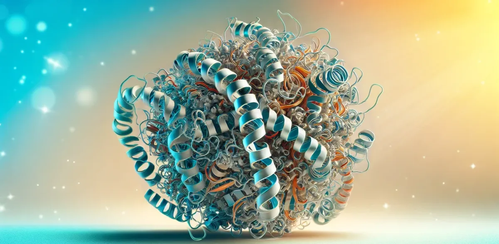

Computational Tutorials for Proteins - Beginner Level
About This Website
Work in progress

https://www.chemeurope.com/en/news/1184617/nobel-prize-in-chemistry-for-computational-protein-design-and-for-protein-structure-prediction.html